- Proyecto:
- Masa Madre
- Cliente:
- Ten10 Design
Proyecto realizado para Ten10 Design.
Masa Madre es una boulangerie ubicada en Marsella, Francia, que reinterpreta el espíritu de las panaderías francesas desde una mirada fresca y contemporánea. La propuesta combina tradición, oficio y cercanía con una identidad visual moderna, atractiva y descontracturada.
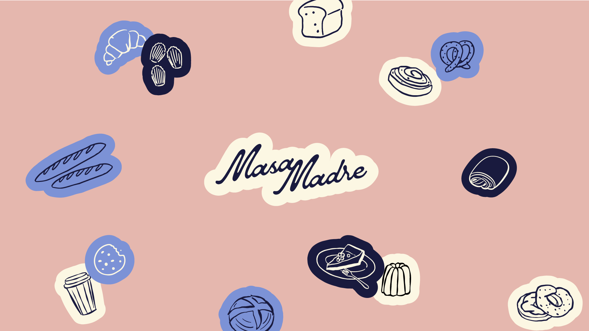
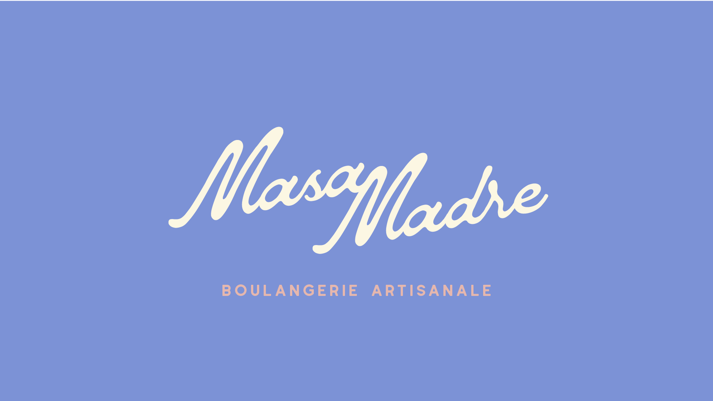
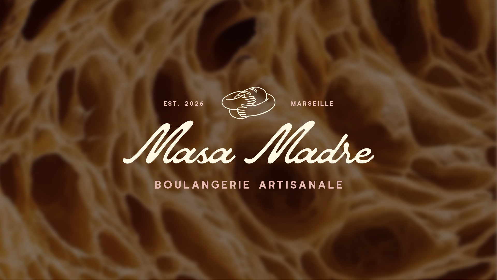
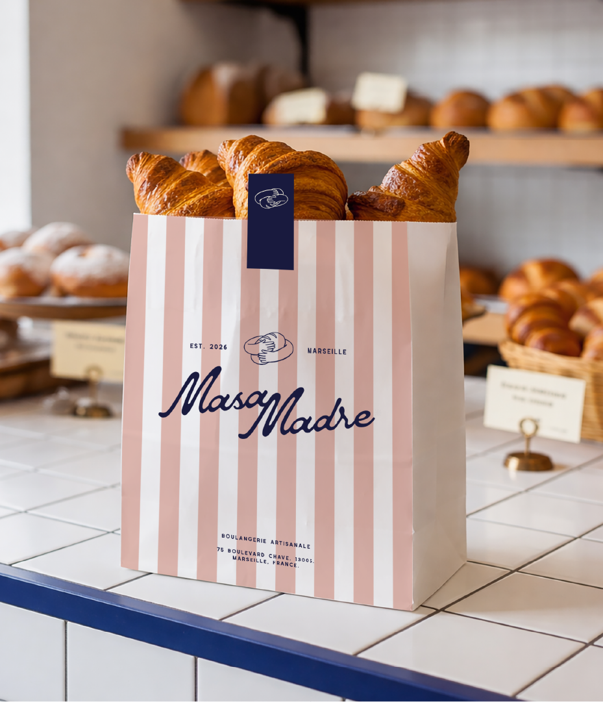
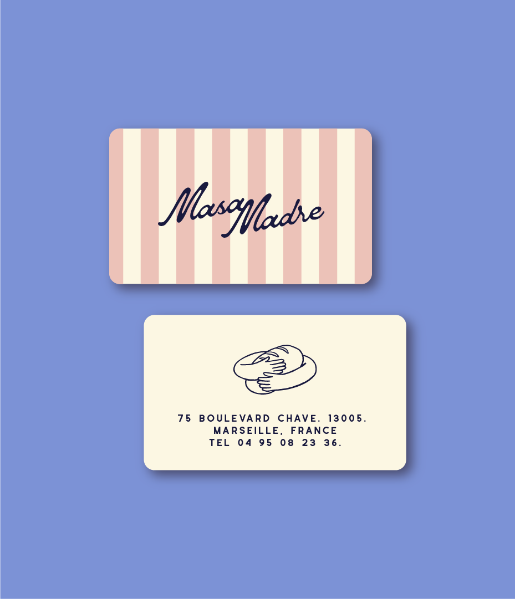
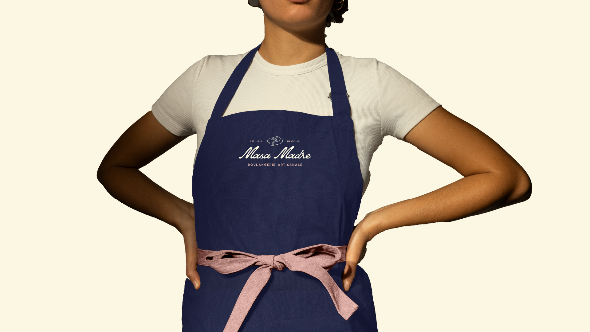
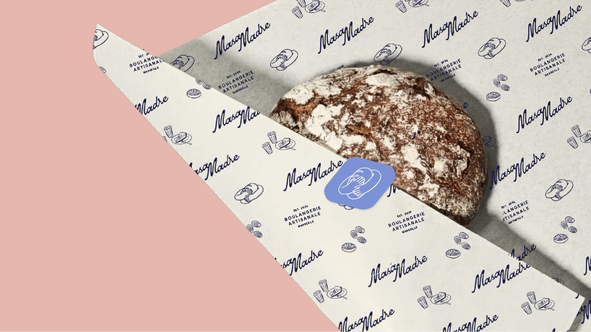
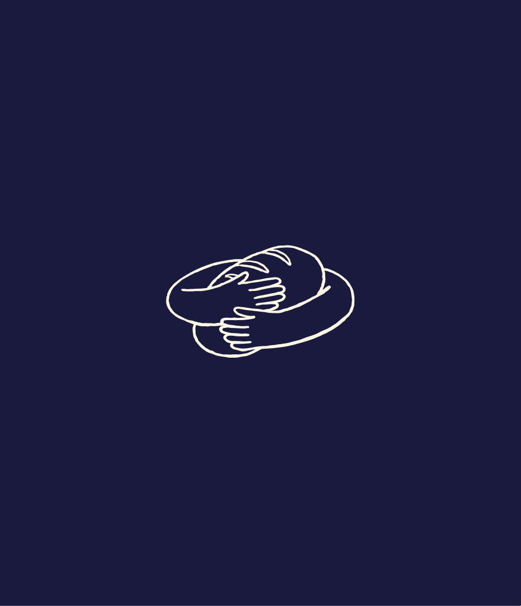
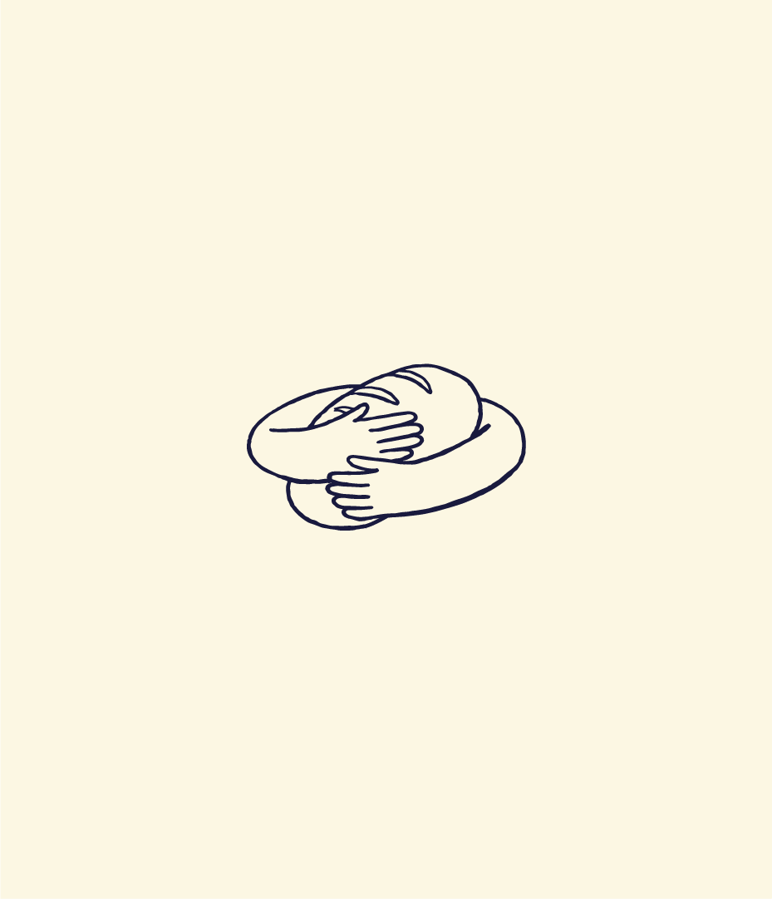
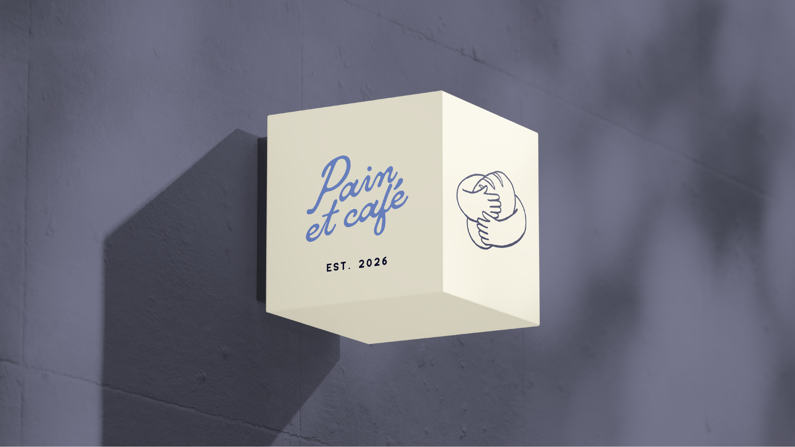
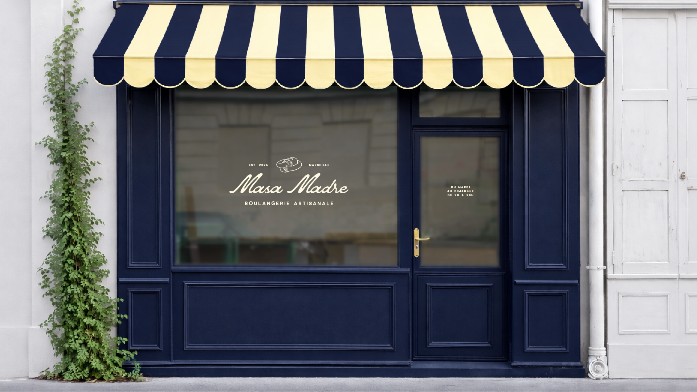
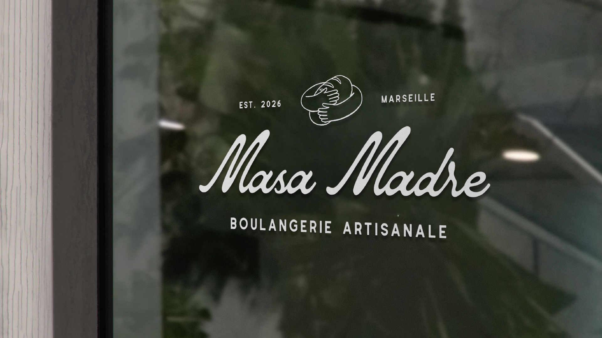
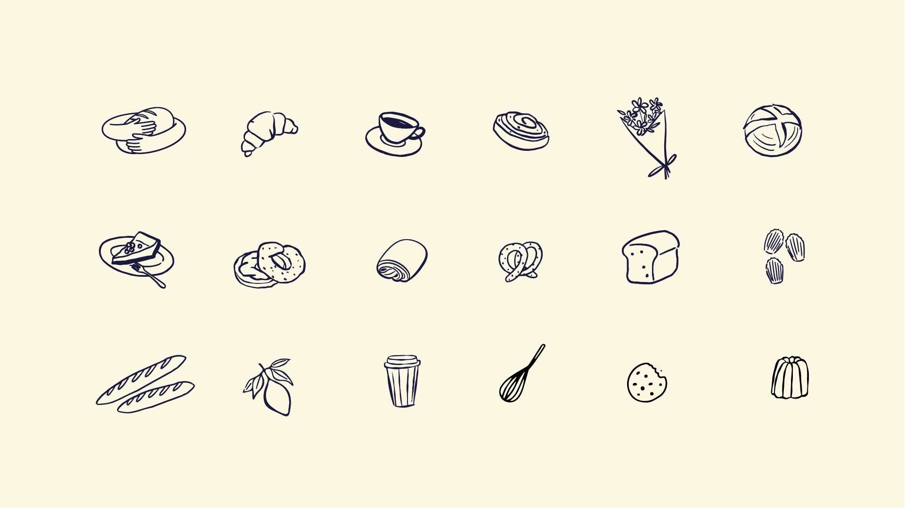